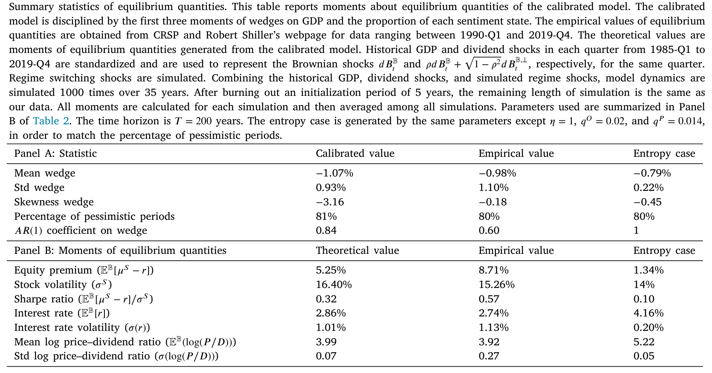
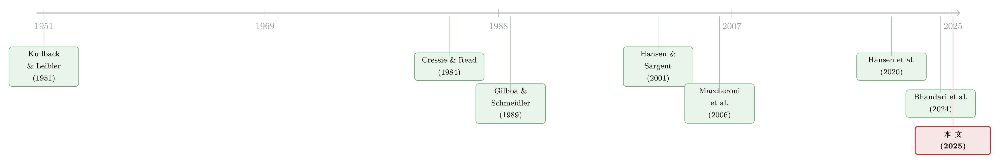

悲观与乐观的浪潮：当「稳健」的投资者学会了随行情换尺子
本文读的是 Maenhout, Vedolin & Xing (2025, Journal of Financial Economics)：他们把 Hansen–Sargent 稳健控制里那把固定的「相对熵」尺子，换成 Cressie–Read 散度家族，于是投资者的悲观与乐观就不再是外生设定，而是被一个单一情绪状态变量内生地、随经济冲击「荡」出来——并由此同时生出逆周期的风险厌恶、顺周期的持仓，以及与数据量级吻合的股权溢价。
1 一个让人不安的事实
先看一张图。如果你把美国「专业预测者调查」(Survey of Professional Forecasters, SPF) 里关于 GDP 增长的共识预测，减去一个统计模型（VAR(2)）给出的客观预测，得到的差值，就是预测者们的信念扭曲 (belief distortion)——他们比「理性的机器」多悲观、或多乐观了多少。
这条曲线最扎眼的地方，不是它偏离零，而是它来回摆动。衰退前夕，人们往往一片乐观；可 2008 危机之后，对未来经济活动的悲观情绪却像退不去的潮水，一压就是好几年。一会儿悲观，一会儿乐观，潮起潮落。
于是一个很自然的问题摆在面前：这种悲观—乐观的浪潮，到底是从哪里来的？
行为金融给的一种答案是「人本来就不理性」——诊断性预期 (diagnostic expectations)、外推 (extrapolation)、记忆衰退，都能制造出会波动的信念。（关于「嘴上说的预期藏不住手上的外推」，可参见《想知道投资者信什么？去问价格，别问问卷》 与《外推者与逆向者》。）但本文走的是另一条路：偏好这条路。它要说的是——哪怕投资者完全理性、只是「怕自己的模型错了」，悲观与乐观的浪潮也能内生地涌出来。
这就要从稳健控制说起。
2 旧框架的死角：相对熵为什么会「卡住」
Hansen 和 Sargent (2001) 那篇奠基之作给了我们一个优雅的图景：一个厌恶模型模糊 (model ambiguity) 的决策者，手里并不是只有一个模型，而是一整族围绕「基准模型 (baseline model)」的近邻模型。他不知道哪个对，于是干脆对最坏的那个模型做优化——这就是「稳健 (robust)」。在贝叶斯的解读下，这个被防范的「最坏模型」，恰恰可以看成一组内生的、悲观的主观信念。
那么，「最坏」要在多大的范围里找？你得先有一把尺子，去量「候选模型离基准有多远」。整个 Hansen–Sargent 文献，用的都是同一把尺子：Kullback–Leibler 散度 (Kullback and Leibler, 1951)，也就是相对熵。
问题就出在这把尺子上。作者的第一个论点很尖锐：相对熵在信息论里地基扎实、对动态问题也常常好算，但在独立同分布 (i.i.d.) 的冲击环境里，它会导致「短视的、恒定的」信念扭曲。换句话说，用相对熵，最坏模型的悲观程度是一个常数，不随经济起伏。这跟第 1 节那条来回摆动的曲线，根本对不上。
为什么相对熵会「卡」在这里？这其实不是巧合，而是一个唯一性定理。作者证明：要让这套「折现的偏离惩罚」满足递归性 (recursivity)——也就是今天的惩罚能干净地拆成「此刻的一小步」加上「明天起的延续惩罚」——唯一能担此重任的散度，正是相对熵。用论文的话说，递归性要求
$$ \phi''(Z)\,Z = \text{const}, $$
而这个条件唯一地把 \(\phi\) 钉死成了 KL 散度。
这是理解全文的关键张力：相对熵之所以「好用」，恰恰是因为它把惩罚拆得太干净、太可加——而正是这种「可加性」，抹掉了信念扭曲随时间、随状态变化的可能。要让情绪动起来，就必须打破这种可加性，又不能丢掉时间一致性。
接着，一个自然的问题是：有没有别的尺子，既能保住递归性，又能让悲观程度随行情变化？
3 关键一步：换一把会「随状态变形」的尺子
本文的核心一招，是把相对熵换成 Cressie–Read 散度家族 (Cressie and Read, 1984)。先从离散时间讲起。设状态 \(y\) 在基准模型 \(\mathbb{B}\) 与某个被扭曲的备择模型 \(\mathbb{U}\) 下分别演化，\(Z_t\) 是两者之间的似然比 (likelihood ratio)，\(u\) 是刻画悲观程度的信念扭曲。一个一般的 \(\phi\)-散度可以写成
$$ R^{\mathbb{U}} = \mathbb{E}^{\mathbb{B}}\!\left[\sum_{t} \beta^{t}\big(\phi(Z_{t+\Delta t}) - \phi(Z_t)\big)\right], $$
其中 \(\phi\) 是凸函数、\(\phi(1)=0\)。Cressie–Read 把这个 \(\phi\) 取成一个由单一参数 \(\eta\) 索引的家族：
$$ \phi(z) = \frac{1 - \eta + \eta\, z - z^{\eta}}{\eta(1 - \eta)}, \qquad \eta \in \mathbb{R}\setminus\{0,1\}. $$
这个家族的妙处，在于它把许多熟面孔收进了同一顶帐篷：\(\eta \to 1\) 就是 KL 相对熵；\(\eta = 0\) 是 Burg (1972) 熵；\(\eta = 1/2\) 对应 Hellinger (1909) 距离；\(\eta = 2\) 则是修正的 \(\chi^2\) 散度。相对熵不再是唯一选择，而只是 \(\eta=1\) 这一个点。
但真正关键的一步在于：当 \(\eta \neq 1\) 时，光换 \(\phi\) 会破坏递归性。作者的解法，是引入一个缩放因子 (scaling factor) \(\Phi\)，并证明唯一能恢复递归性的取法是
$$ \Phi_t = Z_t^{\,1-\eta}. $$
把这个缩放因子代回连续时间的散度定义，悲观投资者的「偏离惩罚」就变成了：
请盯住中间那一项 \(Z_s^{\eta-1}\)。在相对熵的世界里（\(\eta=1\)），它等于 \(1\)，于是惩罚不过是把折现后的「扭曲平方」一段段加起来——这正是第 2 节那个「短视、恒定」的老结果。而一旦 \(\eta \neq 1\)，这个权重就活了起来：\(Z_s\) 概括了过去全部的冲击与信念扭曲，于是「此刻偏离一步要付多大代价」，取决于经济走到了今天这一路的历史。
似然比 \(Z\) 本身长这样：
$$ Z_t = \exp\!\left(-\int_0^t \tfrac{1}{2}\,|u_s|^2\, ds - \int_0^t u_s'\, dB_s^{\mathbb{B}}\right). $$
它把一路上的布朗冲击 \(B^{\mathbb{B}}\) 累积进一个数。换句话说，作者用一个单一的情绪状态变量 (sentiment state variable)，把「过去发生了什么」压缩成了「现在该多悲观」。即便冲击本身是 i.i.d.，主观信念也会内生地对经济做出反应——老框架的死角，就这样被绕开了。
4 一个参数 \(\eta\)，两种「性格」
到这里，整篇论文的经济学其实都浓缩在了 \(\eta\) 这一个数上。作者给了它一个非常清楚的解读：\(\eta\) 衡量的是投资者对信念扭曲在时间上「平滑」的偏好。\(\eta\) 越靠近 1，越想把悲观情绪在各期之间摊匀；\(\eta\) 偏离 1，则情绪的内生动态会随之分叉——而分叉的方向，取决于 \(\eta\) 在 1 的哪一侧。
- 当 \(\eta < 1\)：主观信念呈现动量式 (momentum-like) 动态。一个正向冲击之后，人会变得不那么悲观、更乐观，情绪顺周期。
- 当 \(\eta > 1\)：主观信念呈现反转式 (reversal-like) 动态。同样的正向冲击，反而让人更悲观、更不乐观。
（这两种「性格」的对照，跟《三个臭皮匠，反而没那么容易上头？》 里讨论的过度反应/反应不足是同一对概念，只是这里它们是从偏好里内生长出来的。）
更漂亮的是一个精确的弹性结果。作者证明，动态风险厌恶（在随机微分效用 à la Duffie and Epstein (1992) 的语言里就是那个「方差乘子」）对情绪状态变量的弹性，恰好等于 \(1-\eta\)。这意味着：
- \(\eta < 1\) 时，风险厌恶逆周期——经济差时人更怕风险，于是持仓顺周期（行情好时多配股）；
- \(\eta > 1\) 时，结论整个翻转。
逆周期的风险厌恶，正是把「股权溢价之谜」喂饱的经典机制——习惯形成模型（Campbell and Cochrane, 1999）靠的也是它。区别在于：习惯模型把时变风险厌恶外生地写进效用函数；而本文里，它是投资者「怕模型错」这一件事的内生副产品。（关于逆周期的定价核，亦可参见《定价核的两副面孔》。）
还有一个更细的不对称：情绪的波动率也会对冲击做出反应，且对正负冲击反应不一样。\(\eta<1\) 时，正向冲击后悲观情绪的波动收缩、负向冲击后放大；\(\eta>1\) 则相反。这条「波动率的内生反应」，正是本文区别于诊断性预期的地方——后者的诊断分布方差是常数（Bordalo et al., 2018）。
为了同时容纳乐观，作者还借鉴 Bhandari et al. (2024) 的乐观建模，嵌入一个机制切换 (regime-switching) 结构。于是悲观与乐观交替成浪，把持仓选择的状态依赖进一步放大。
5 把效用指数写下来，再推到均衡
有了散度，下一步是把它装进一个完整的稳健决策问题。对悲观情形，作者固定一个稳健偏好强度 \(\theta^P > 0\)，定义如下的效用指数：
$$ U^{P,c}_t = \inf_{u}\, \mathbb{E}^{\mathbb{U}}_t\!\left[\int_t^T e^{-\delta(s-t)}\delta\, U(c_s)\, ds + e^{-\delta(T-t)}\epsilon\, U(c_T) + \frac{1}{\theta^P}\, R^{\mathbb{U}}_t\right]. $$
读这个式子的窍门在于那个 \(\inf_u\)：决策者主动地去找一个最坏的信念扭曲 \(u\)，使得即便加上惩罚项 \(R^{\mathbb{U}}_t/\theta^P\)，期望效用仍然最低。这个极小化的解 \(u^*\)，就是最坏情形信念扭曲 (worst-case belief distortion)——也正是模型里那组内生的悲观主观信念。\(R^{\mathbb{U}}_t\) 的角色，则是给「扭曲得太离谱、太不合情理」的信念套上缰绳。
作者在论文里证明了几件让这套结构站得住的事：
- 递归性与时间一致性。借助 \(\Phi_t = Z_t^{1-\eta}\) 这个缩放因子，Cressie–Read 散度成为 Maccheroni et al. (2006b) 意义下的递归模糊指数 (recursive ambiguity index)，从而保证偏好的时间一致性——这是动态优化能成立的前提。
- 齐次性 (homotheticity)。式 (11) 里那个随机权重 \(\Psi\)，正是为了让结果偏好保持齐次，从而保住可解性。
- 一种新的随机表示。作者指出，这套效用指数要写成一个正—倒向随机微分方程 (forward–backward SDE, FBSDE) 的优化，而不是传统稳健控制/递归偏好的纯倒向 BSDE。多出来的那个「正向分量」，技术上正对应情绪状态 \(Z\) 的前向累积。
把它放进一个 Epstein and Zin (1989) 代表性投资者的一般均衡里，再用第 1 节那条 SPF 情绪曲线来校准，故事就闭环了：时变情绪 → 逆周期风险厌恶 → 逆周期的均衡股权溢价与夏普比率。
6 数据、校准，与一个可被证伪的预言
实证这一头并不复杂，但很关键。作者用 SPF 里 GDP 增长的一季度前共识预测，减去一个用「实际 GDP、失业率、联邦基金利率、通胀」估出来的 VAR(2) 的一季度前预测，作为情绪（信念扭曲）的代理；数据为季度频率，区间 Q1-1990 至 Q4-2019。这里有一条不可回避的假设：调查回答反映的是投资者的主观信念。
校准之后，模型不只是定性对，而是定量地把股权风险溢价、夏普比率匹配到了数据量级；并且能分别刻画悲观态与乐观态：在悲观（乐观）状态下，股权溢价与波动率更高（更低），无风险利率更低（更高）。
最让我欣赏的，是模型给出了一个可被证伪的预言，而且作者真的去数据里检验了它。Kohlhas and Walther (2021) 曾记录：当期产出的实现值会负向预测预测误差，他们把这个负号解读为「过度反应」。作者用自己的模型跑同样的回归——把预测误差对 GDP 实现值回归——复现了那个负号。而在本文里，这个负号不是非理性，而是主观信念顺周期的自然推论。如表 4 所示，校准模型估出的系数，与数据中观测到的系数对得上。

Table 4
更进一步，作者还展示了信念楔子 (belief wedge) 对长期股票收益的预测力：模型生成的估计系数，同样与数据中的对齐。这一点，和「分析师/投资者的预期错误能解释横截面收益」的实证脉络遥相呼应（参见《不需要那些「玄学风险」》）。
7 文献脉络
把这条线捋一捋，会看到一段很清晰的演进。
最早，是统计学给出的两块基石：Kullback and Leibler (1951) 的相对熵，和 Cressie and Read (1984) 那个把各种散度统一起来的参数族——后者在本文里被「翻译」成了经济学。决策理论这边，Gilboa and Schmeidler (1989) 的极大极小期望效用，给「面对一族模型、防范最坏」提供了公理基础。
然后，Hansen and Sargent (2001) 与 Anderson, Hansen, Sargent (2003) 把这套思想做成了稳健控制的资产定价引擎，但他们用的始终是相对熵这把固定的尺子。Maccheroni et al. (2006a,b) 用变分偏好 (variational preferences) 把这些不同路数收编进同一框架，并给出递归模糊指数的概念——这正是本文证明 Cressie–Read 满足递归性时所站的肩膀。

最近的两篇，是与本文贴得最近的参照。Hansen et al. (2020) 构造「扭曲的相对熵 (twisted relative entropy)」来制造逆周期的模型设定担忧；Bhandari et al. (2024) 则用悲观与乐观去解释宏观波动，并直接对接调查数据。本文的位置就清楚了：它不外生地去「扭」熵、也不外生地去调稳健偏好的强度，而是只换一把尺子（\(\eta\neq1\)），就让时变的悲观—乐观、逆周期风险厌恶、乃至资产价格的丰富动态，全部内生地长出来——并且因为站在 Maccheroni et al. (2006b) 的框架里，时间一致性是「构造上」保证的。
评论与延伸（Q&A + 研究方向）
(a) 几个可能的疑问
Q：这跟诊断性预期 (Bordalo et al., 2020) 到底差在哪？两者不都能生成会摆动的信念吗？
差在「波动率会不会动」。诊断性预期里，诊断分布在 AR(1) 下方差是常数；本文的信念波动率会对基本面冲击做出不对称反应（正负冲击影响相反）。而且本文的信念是从「怕模型错」的偏好里内生出来的，不是一个外生的心理偏差。
Q：\(\eta\) 到底该取多少？它是被数据钉死的，还是作者挑出来凑结果的？
\(\eta\) 决定了「情绪是动量还是反转」这件定性大事（以 1 为界），所以它的符号是被「现实中情绪如何随冲击变化」约束的。论文用 SPF 的情绪曲线来校准，\(\eta<1\) 对应顺周期情绪——这与「当期产出负向预测预测误差」的实证一致。但具体取值的稳健性，仍是读者该追问的地方。
Q：把「调查回答 = 主观信念」当作前提，会不会太强？
作者自己在脚注里很坦诚：没有一个「人们如何作答调查」的模型，这一步只能是假设。他们援引 Good (1952) 的论证为其辩护——最坏情形信念既然要通过「合理性」检验，那它被一个填问卷的人采纳，并非不可想象。但这确实是整条实证链上最该被压力测试的一环。
Q：逆周期风险厌恶，habit 模型（Campbell-Cochrane）早就有了，本文新在哪？
新在「内生」二字。Habit 模型把时变风险厌恶手动写进代表性投资者的效用；本文里，随机的风险厌恶是投资者模糊厌恶的副产品，弹性精确等于 \(1-\eta\)。机制不同，可证伪的含义也就不同——比如本文额外预言了信念波动率对冲击的不对称反应。
Q：为什么需要一个「正—倒向」SDE（FBSDE），普通的 BSDE 不够吗？
因为情绪状态 \(Z\) 是前向累积的（它记着过去的冲击），而效用是后向递归求解的。熵框架下没有这个前向分量，所以一个 BSDE 就够；Cressie–Read 把历史塞进了 \(Z^{\eta-1}\) 这个权重，于是必须配一个前向方程来追踪 \(Z\)。这也是为什么老框架做不到时变、而本文能。
Q：模型把市场设成无摩擦、聚焦资产定价；Bhandari et al. (2024) 却带名义刚性和劳动力摩擦。这是退步吗？
不是，是分工。后者要解释失业波动之谜，需要宏观摩擦；本文要的是把「时变情绪 → 资产价格」这条链条讲干净，无摩擦反而让机制更透明。两篇是互补，不是替代。
(b) 几个可能的研究问题与提案
1. 把 Cressie–Read 情绪搬进公司债/信用利差。 【经济故事】信用利差里塞着大块的、随周期起伏的风险溢价与「违约恐惧」。如果投资者对违约强度的模型怀有 \(\eta\neq1\) 的稳健偏好，那么逆周期的悲观就会内生地放大衰退期的信用利差——这正是「信用利差之谜」想要的成分。 【可行性】中。理论端可把本文的代表性投资者嫁接到一个简约的结构化违约模型上；实证端用 TRACE 的利差 + SPF/分析师对违约或盈利的预测来构造信用市场的「情绪代理」。难点是信用市场缺少同样干净的「客观 VAR 基准」，需要谨慎构造。
2. 用资产价格反推 \(\eta\)，再与调查反推的 \(\eta\) 对质。 【经济故事】本文同时给出两类含义：情绪对收益的可预测性（价格侧）、情绪随冲击的动态（调查侧）。两侧各自隐含一个 \(\eta\)。若二者一致，是对模型的强支持；若系统性背离，则恰好量化了「调查 ≠ 主观信念」这道楔子有多宽。 【可行性】中高。数据是现成的（SPF + CRSP/期权隐含矩）。识别靠「同一 \(\eta\) 必须同时拟合两组矩」的过度识别检验，doable，但对 VAR 设定敏感。
3. 把单一代表性投资者拆成「不同 \(\eta\)」的异质人群。 【经济故事】若一部分投资者动量（\(\eta<1\)）、另一部分反转（\(\eta>1\)），市场的总情绪就是两股浪的叠加，可能解释为什么情绪在不同时期「换挡」。这天然连向投资者栖息地与需求体系的研究。 【可行性】中。理论上是带异质模糊偏好的均衡，技术不轻；实证上可借需求体系（参见《机构到底信什么？》）把不同持有人的预期与持仓对上。
4. 外资持有人是「情绪的输入者」还是「平滑者」？ 【经济故事】外国投资者面对的「基准模型」与本土投资者不同（信息劣势、汇率与政治风险）。若他们的 \(\eta\) 系统性偏离本土投资者，那么外资份额的变化就会改变一国资产价格里的「情绪载荷」。 【可行性】中低。需要按国别/持有人类型切分的持仓与预期数据，识别外资特有的稳健偏好很难，更像是一个长期的结构性议程，而非一篇就能干净做完的论文。
我的判断
这篇论文最漂亮的地方，是它的「节俭」：不靠新增的心理偏差、不靠外生调参，只把相对熵换成 \(\eta\neq1\) 的 Cressie–Read 散度，就把时变悲观/乐观、逆周期风险厌恶、顺周期持仓、逆周期溢价一次性接出来，而且时间一致性是构造上保证的。\(\eta\) 这一个参数同时承担「定性方向」（动量 vs 反转）与「定量弹性」（风险厌恶弹性 \(=1-\eta\)），是难得的简洁与统一。它把「稳健控制为什么只能给出恒定悲观」这个老问题，归结到了一条递归性的唯一性定理上，再用一个缩放因子干净地绕过去——这是真正的理论贡献。
对识别的担忧，我有两点。其一是那条「调查回答即主观信念」的桥，整条实证链都压在它上面；作者很诚实，但读者应当把它当作待检的假设而非既定事实。其二是 VAR(2) 这个「客观基准」本身就是一种建模选择——换一个信息集或滞后阶，情绪代理会变，进而影响校准。
后续我最想看到的，是把这套机制从「代表性投资者 + 股市总量」推到横截面与信用市场：如果 \(\eta\neq1\) 的情绪机制是真的，它应该在不同久期、不同信用品质的资产上留下可被分离的、量级可预测的痕迹。那才是对这个优雅理论最硬的检验。
参考文献
- Anderson, E. W., Hansen, L. P., & Sargent, T. J. (2003). A quartet of semigroups for model specification, robustness, prices of risk, and model detection. Journal of the European Economic Association 1(1), 68–123.
- Bhandari, A., Borovička, J., & Ho, P. (2024). Survey data and subjective beliefs in business cycle models. Review of Economic Studies, forthcoming.
- Bordalo, P., Gennaioli, N., & Shleifer, A. (2018). Diagnostic expectations and credit cycles. Journal of Finance 73(1), 199–227.
- Bordalo, P., Gennaioli, N., Ma, Y., & Shleifer, A. (2020). Overreaction in macroeconomic expectations. American Economic Review 110(9), 2748–2782.
- Burg, J. P. (1972). The relationship between maximum entropy spectra and maximum likelihood spectra. Geophysics 37(2), 375–376.
- Campbell, J. Y., & Cochrane, J. (1999). By force of habit: A consumption-based explanation of aggregate stock market behavior. Journal of Political Economy 107(2), 205–251.
- Cressie, N., & Read, T. R. C. (1984). Multinomial goodness-of-fit tests. Journal of the Royal Statistical Society, Series B 46(3), 440–464.
- Duffie, D., & Epstein, L. G. (1992). Stochastic differential utility. Econometrica 60(2), 353–394.
- Epstein, L. G., & Zin, S. E. (1989). Substitution, risk aversion, and the temporal behavior of consumption and asset returns: A theoretical framework. Econometrica 57(4), 937–969.
- Gilboa, I., & Schmeidler, D. (1989). Maxmin expected utility with non-unique prior. Journal of Mathematical Economics 18(2), 141–153.
- Hansen, L. P., & Sargent, T. J. (2001). Robust control and model uncertainty. American Economic Review 91(2), 60–66.
- Kohlhas, A. N., & Walther, A. (2021). Asymmetric attention. American Economic Review 111(9), 2879–2925.
- Kullback, S., & Leibler, R. A. (1951). On information and sufficiency. Annals of Mathematical Statistics 22(1), 79–86.
- Maccheroni, F., Marinacci, M., & Rustichini, A. (2006b). Dynamic variational preferences. Journal of Economic Theory 128(1), 4–44.
- Maenhout, P. J., Vedolin, A., & Xing, H. (2025). Robustness and dynamic sentiment. Journal of Financial Economics 163, 103953.